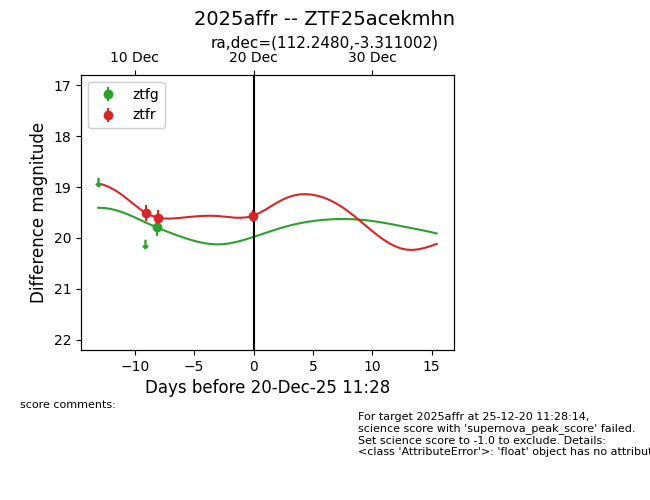
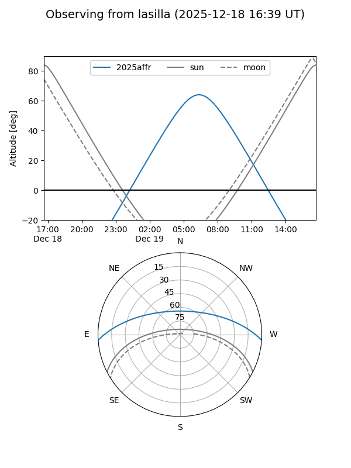
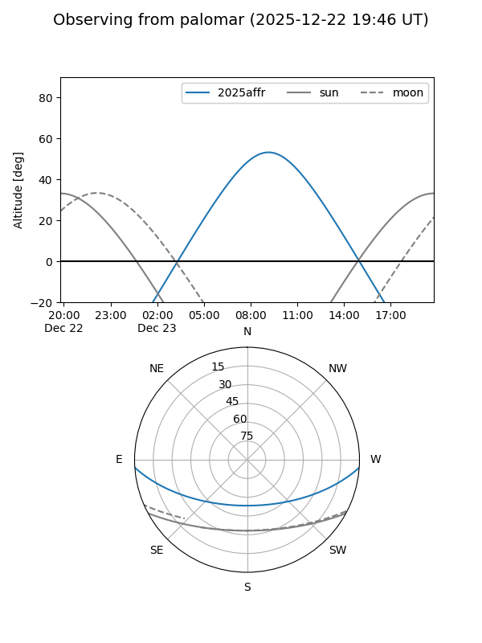
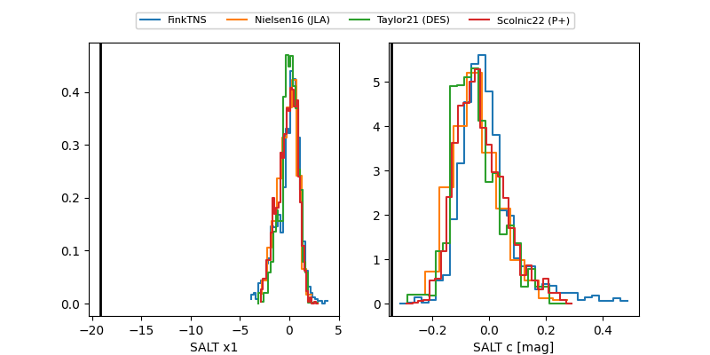

2025affr
Target 2025affr at 2025-12-18 11:18
Aliases and brokers:
FINK: fink-portal.org/ZTF25acekmhn
Lasair: lasair-ztf.lsst.ac.uk/objects/ZTF25acekmhn
ALeRCE: alerce.online/object/ZTF25acekmhn
TNS: wis-tns.org/object/2025affr
YSE: ziggy.ucolick.org/yse/transient_detail/2025affr
alt names
ZTF25acekmhn (ztf,fink_ztf)
2025affr (tns,yse)
Coordinates:
equatorial (ra, dec) = 112.2480,-3.31100
equatorial (HMS+DMS) = 07:28:59.52,-03:18:39.61
galactic (l, b) = (220.2025,+6.81154)
Photometry
last ztfg=19.79, ztfr=19.60
1 ztfg, 2 ztfr detections
Lightcurve

Visibility


Additional plots
